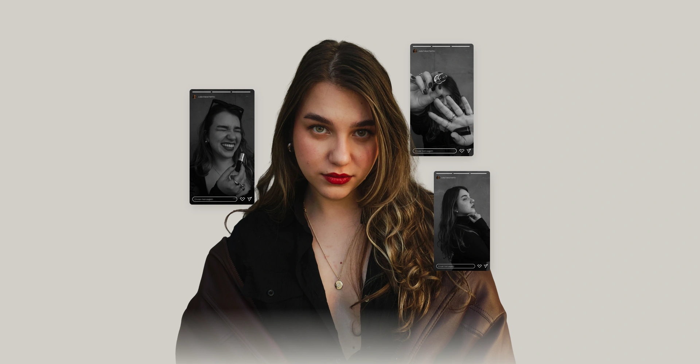
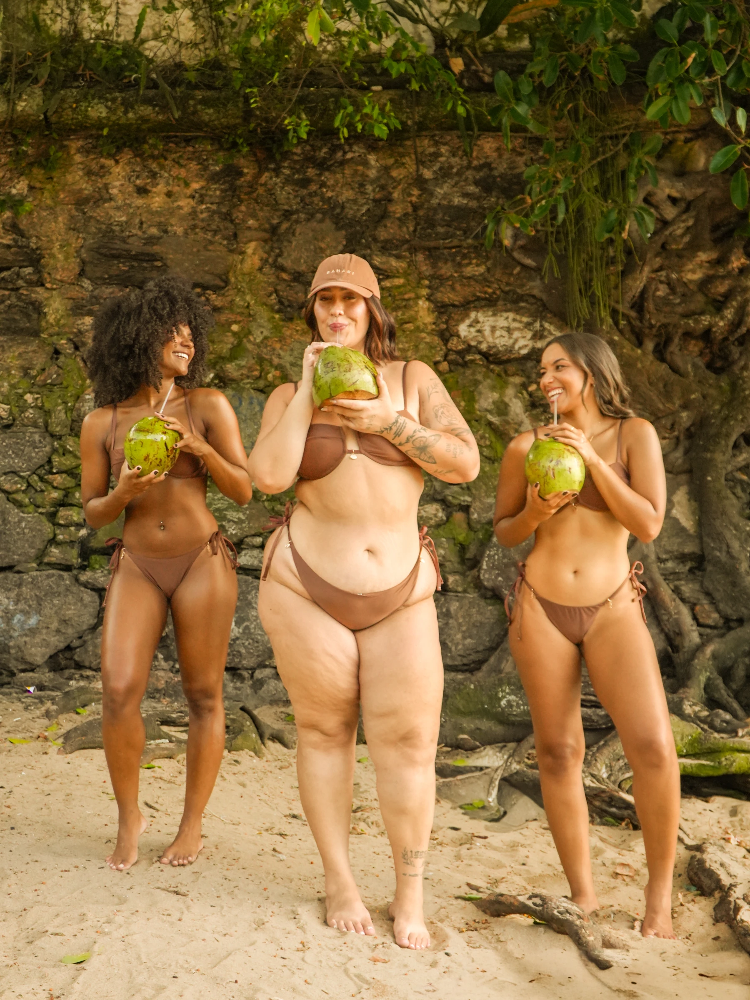

Estratégia
de marca.
Para definir o lugar que sua marca quer ocupar e as escolhas que sustentam sua comunicação.
- Posicionamento e essência
- Expressão visual e verbal
- Estratégia de comunicação

Defino o que sua marca precisa dizer e transformo esse posicionamento em conteúdo, campanhas e direção criativa.
Do posicionamento à expressão, um trabalho pensado para o momento da sua marca pessoal ou empresa.
Para definir o lugar que sua marca quer ocupar e as escolhas que sustentam sua comunicação.
Para levar o posicionamento ao dia a dia com planejamento, roteiros e conteúdo que faça sentido para seu público.
Para dar conceito e unidade a campanhas e lançamentos, das imagens aos vídeos e materiais.
Projetos diferentes, com decisões próprias. Conheça minha participação e o que foi entregue ou observado em cada um.

Um lançamento com conceito, imagem e narrativa.
Direção criativa do lançamento da marca de biquínis de Bia França, em dupla com Larissa Gomes, na campanha de verão 2025/2026.
Direção criativa do lançamento da Bahari, marca de biquínis de Bia França, em dupla com Larissa Gomes, na campanha de verão 2025/2026.
Minha participação: conceito artístico, press kit para influenciadoras, direção dos ensaios e roteiros dos vídeos.
Resultado observado: publicações entre 249 mil e 411 mil visualizações, conforme as capturas do portfólio.
Direção criativa: Julia Maschietto e Larissa Gomes. Fotografia e vídeo da campanha fornecidos para esta versão. As capturas de resultados são do portfólio fornecido.

Estratégia de comunicação para a data, aproximando o conteúdo dos objetivos do negócio. A cliente relatou recompra e novos compradores entre os seguidores.
De R$ 10 mil para R$ 30 mil em 2024, segundo o relato da cliente sobre a Páscoa anterior e a campanha trabalhada.
Integrei a equipe multidisciplinar de comunicação na pré-campanha e na campanha de 2026, participando da estratégia, dos roteiros e da gestão das redes.
Mais de 100 vídeos em 45 dias, conteúdos próximos de 200 mil visualizações e crescimento de cerca de 27% na base de seguidores durante a campanha, conforme os resultados relatados por Julia no perfil profissional.
Estratégia de conteúdo e lançamento de curso digital para a psicanalista Bruna Mariana, com pautas conectadas à sua atuação e linguagem.
Conteúdos com até 3,4 mil curtidas e 1 mil salvamentos. Os indicadores são de interação com as publicações.
Criação do conceito “Da questão à nota” e da apresentação comercial para uma empresa de gestão de avaliações escolares.
Entrega: uma narrativa que organiza o problema, a proposta e o funcionamento do serviço para a conversa com escolas.

Criação de peças para o Instagram da 1ª Copa das Seleções: Vozes da Amazônia, realizada em São Luís, como integrante da equipe de design.
O resultado apresentado é a entrega de design. As instituições apoiadoras do evento não são apresentadas como clientes diretas de Julia.
Indicadores de projetos específicos, com os períodos e atribuições descritos em cada case.
Vamos conversarO posicionamento aparece em materiais que orientam a comunicação. Aqui, você pode explorar entregas de projetos reais.
Negócio, posicionamento e comunicação para uma consultora de branding e estilo.
Alinhamento visual do book: Larissa Gomes.

O trabalho começa pela escuta e se desenvolve a partir do desafio da sua marca.
Conversamos sobre o negócio, o momento da marca e o que você quer desenvolver.
Organizamos o caminho em uma proposta com escopo, entregas e cronograma.
Pesquisa, estratégia e criação se encontram nos materiais do seu projeto.
Apresentamos as decisões e as entregas que vão orientar os próximos passos.
Deslize para explorar as etapas
Sou estrategista de marca e conteúdo, com atuação em direção criativa. O teatro me deu escuta, leitura de público e atenção ao que precisa ser dito.
Levo esse olhar para o posicionamento, os roteiros e a direção dos projetos que conduzo. Desde 2024, desenvolvi trabalhos para mais de 30 marcas e perfis.

Arraste para interagir. Pelo teclado, use as setas para mover e Enter para balanço suave.
Depoimentos fictícios e ilustrativos para esta apresentação.
Deslize para ler os depoimentos. Pelo teclado, use as setas para mudar de cartão, Home para o primeiro e End para o último.
“O processo trouxe organização e escolhas que fazem sentido para a marca. Cada entrega veio acompanhada de um porquê.”
“A ideia inicial virou um conceito claro para orientar imagens, textos e vídeos. Foi muito bom acompanhar as peças ganhando forma.”
“Eu tinha muitas ideias, mas faltava uma direção. Hoje consigo explicar meu trabalho com clareza e reconhecer minha voz no conteúdo.”
“A comunicação ganhou unidade. Ficou mais fácil escolher os temas e entender como quero me apresentar para o meu público.”
“Gostei de sentir que minha história foi ouvida. O resultado tem personalidade e se conecta com o que eu queria construir.”
Algumas respostas para você entender como podemos trabalhar juntos.
Tirar uma dúvidaO ponto de partida é o desafio da sua marca. Na conversa, definimos quais frentes fazem sentido e organizamos o escopo na proposta. Para esta apresentação, consideramos contratações por projeto; o formato comercial será validado com Julia.
Sim. Podemos conversar sobre posicionamento, conteúdo ou uma campanha. Ter uma identidade visual é uma parte do contexto; a proposta considera o que sua marca precisa desenvolver agora.
Julia atua de forma remota. Projetos que envolvam captação, ensaio ou presença em campo têm a logística definida na proposta.
O cronograma depende do escopo e dos materiais envolvidos. Para visualizar uma contratação nesta demonstração, podemos considerar de 4 a 6 semanas para um projeto de estratégia. Estimativa ilustrativa, sujeita à validação.
A proposta é construída a partir do objetivo, do escopo e das entregas. A primeira conversa ajuda a entender o projeto e o que precisa estar contemplado.
Você conta um pouco sobre sua marca e o que quer desenvolver. A partir desse contexto, organizamos os próximos passos para avaliar o projeto e preparar uma proposta.
Me conte o momento da sua marca e o que você quer desenvolver. Vamos conversar sobre o caminho que faz sentido para o seu projeto.
Vamos conversar